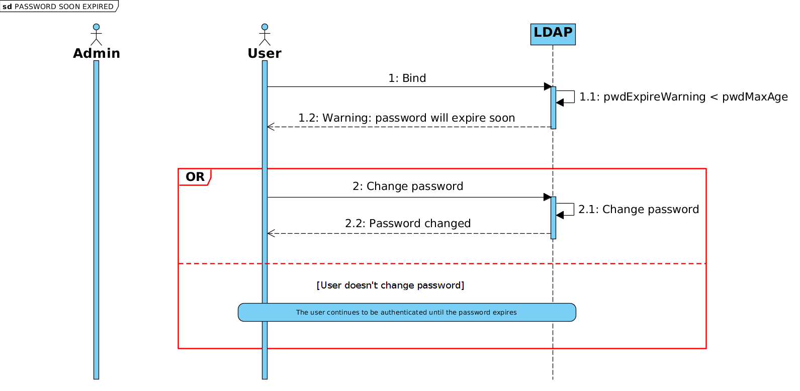

LDAP
| Authentification | Utilisateurs | Mot-de-passe |
|---|---|---|
| ✔ | ✔ | ✔ |
Présentation
LL::NG can use an LDAP directory to:
- authentifier les utilisateurs
- obtenir les attributs utilisateurs
- obtenir les groupes dont l'utilisateur est membre
- changer les mots-de-passe (avec la gestion de la politique de mot-de-passe côté serveur)
This works with every LDAP v2 or v3 server, including Active Directory.
LL::NG est compatible avec la politique de mots-de-passe LDAP :
- LDAP server can check password strength, and LL::NG portal will display correct errors (password too short, password in history, etc.)
- LDAP sever can block brute-force attacks, and LL::NG will display that account is locked
- LDAP server can force password change on first connection, and LL::NG portal will display a password change form before opening SSO session
Configuration
In Manager, go in General Parameters > Authentication modules and choose LDAP for authentication, users and/or password modules.
Niveau d'authentification
Le niveau d'authentification accordé aux utilisateurs authentifiés par ce module.
As LDAP is a login/password based module, the authentication level can be:
- increased (+1) if portal is protected by SSL (HTTPS)
- diminué (-1) si l'autocompletion est autorisée sur le portail (voir Personnalisation du portail)
Variables exportées
List of attributes to query to fill user session. See also exported variables configuration.
Connexion
- Server host: LDAP server hostname or URI (by default: localhost). Autres possibilités :
- Plusieurs serveurs peuvent être renseignés séparés par des virgules ou espaces. Ils seront testés dans l'ordre indiqué.
- Pour utiliser TLS, utiliser
ldap+tls://serveret pour utiliser LDAPS, indiquerldaps://serverau lieu du nom de serveur. - En utilisant TLS, il est possible d'utiliser toutes les options de la fonction start_tls() Net::LDAP telle
ldap+tls://server/verify=none&capath=/etc/ssl. On peut également utiliser les paramètres caFile et caPath.
- Server port: TCP port used by LDAP server. Can be overridden by an LDAP URI in server host.
- Users search base: Base of search in the LDAP directory.
- Account: DN used to connect to LDAP server. Par défaut, une connexion anonyme est utilisée.
- Password: password to used to connect to LDAP server. Par défaut, une connexion anonyme est utilisée.
- Timeout : délai maximum de connexion.
- Version: LDAP protocol version.
- Attributs binaires : expression régulière correspondant aux attributs binaires (voir la documentation Net::LDAP).
Filters
In LDAP filters, $user is replaced by user login, and $mail by user email.
- Default filter: default LDAP fitler for searches, should not be modified.
- Filtre d'authentication : filtre pour trouver l'utilisateur à partir de son login (défaut :
(&(uid=$user)(objectClass=inetOrgPerson))) - Filtre mail : filtre pour trouver l'utilisateur à partir de son mail (défaut:
(&(mail=$mail)(objectClass=inetOrgPerson))) - Alias dereference: How to manage LDAP aliases. (default:
find)
Pour Active Directory, le filtre d'authentification par défaut est :
(&(sAMAccountName=$user)(objectClass=person))
Et le filtre d'adresse mail est :
(&(mail=$mail)(objectClass=person))
Groupes
- Base de recherche : DN de la branche des groupes. La recherche des groupes est désactivé si cette valeur est vide.
- Classe d'object: objectClass du groupe (défaut: groupOfNames).
- Attribut cible : nom de l'attribut du groupe stockant le lien vers l'utilisateur (défaut: member).
- Attribut source utilisateur : nom de l'attribut utilisateur utilisé dans le lien (défaut: dn).
- Attributs recherchés : nom(s) de l'attribut stocké dans le nom du groupe, séparés par des virgules (défaut: cn).
- Récursivité : active la fonctionnalité récursive (défaut: 0). Si activé et si le groupe de l'utilisateur est membre d'un autre groupe (groupes de groupes), tous les groupes parents seront considérés comme groupes de l'utilisateur.
- Attribut source du groupe : nom de l'attribut dans l'entrée groupe utilisé dans le lien pour la recherche récursive de groupe (défaut : dn).
Mot-de-passe
- Password policy control: enable to use LDAP password policy. This requires at least Net::LDAP 0.38. (see ppolicy workflow below)
- Password modify extended operation: enable to use the LDAP extended operation
password modifyinstead of standard modify operation. - Change comme utilisateur : active la modification du mot-de-passe avec les éléments d'authentification de l'utilisateur connecté. Nécessite de requérir l'ancien mot-de-passe (voir personnalisation du portail).
- LDAP password encoding: can allow to manage old LDAP servers using specific encoding for passwords (default: utf-8).
- Utiliser l'attribut reset : activé pour utiliser l'attribut reset du mot-de-passe. Cet attribut est activé par LemonLDAP::NG lorsque le mot-de-passe a été réinitialisé par mail et que l'utilisateur a choisi de générer le mot-de-passe (défaut : activé).
- Attribut reset : nom de l'attribut reset du mot-de-passe (défaut : pwdReset).
- Valeur de reset : valeur à mettre dans l'attribut reset pour activer la réinitialisation du mot-de-passe (défaut : TRUE).
Password expiration warning workflow


Password expiration workflow